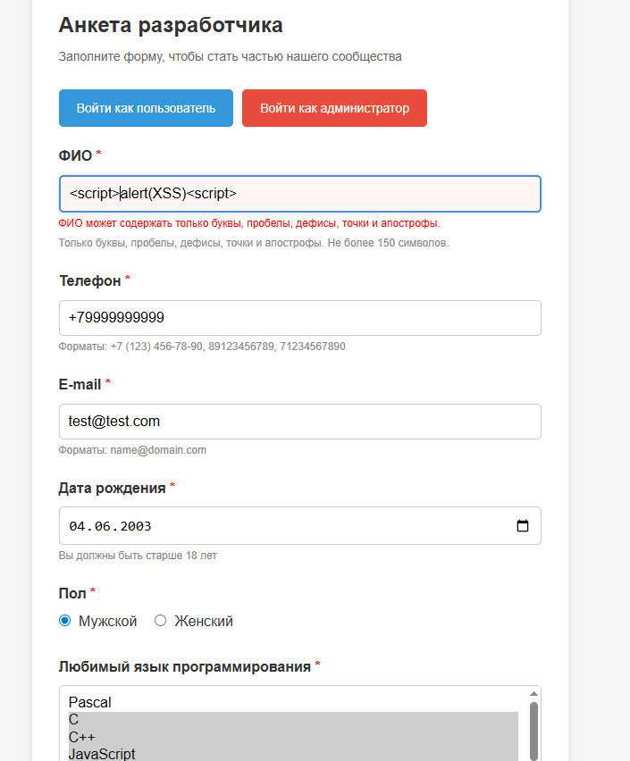
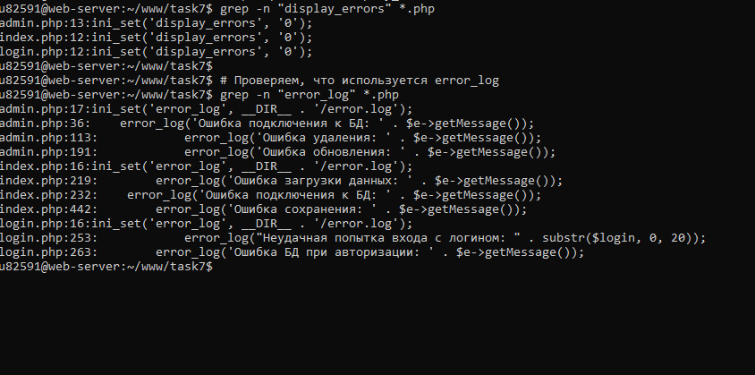
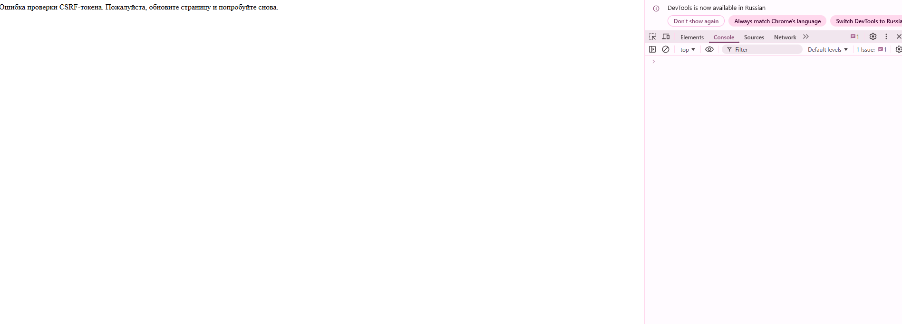
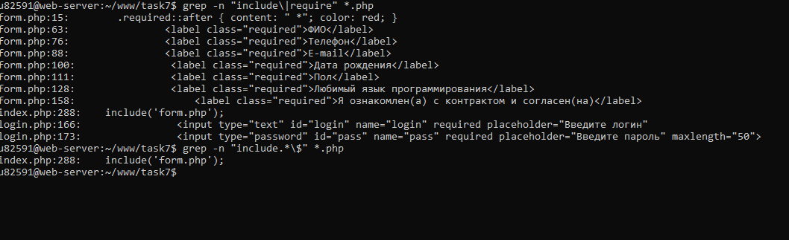
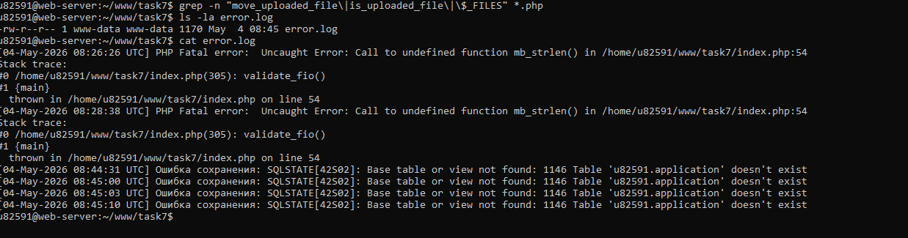
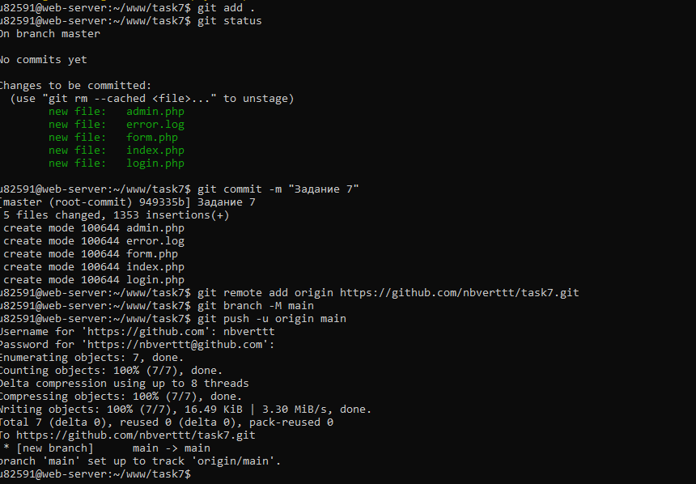

Что такое XSS: Атака, при которой злоумышленник внедряет вредоносный JavaScript-код в веб-страницу. Код выполняется в браузере жертвы и может украсть cookies, сессии, пароли.
Пример атаки: Пользователь вводит в поле ФИО <script>alert('XSS')</script>. Если данные выводятся без экранирования, скрипт выполнится.
Метод защиты: Функция htmlspecialchars($string, ENT_QUOTES, 'UTF-8') преобразует специальные символы HTML в безопасные сущности:
Пример кода в проекте:
<script>alert('XSS')</script> валидация отклонила ввод. При вводе <SCRIPT>alert(XSS)</SCRIPT> текст отобразился как обычный, скрипт не выполнился.
Что это: Сервер не должен показывать пользователям техническую информацию: пути к файлам, детали ошибок SQL, версии ПО.
Методы защиты:
ini_set('display_errors', '0')— отключает вывод ошибок в браузерini_set('log_errors', '1')— включает запись ошибок в лог-файлini_set('error_log', __DIR__ . '/error.log')— указывает путь к файлу лога- Замена деталей ошибок на общие сообщения: "Ошибка сервера. Попробуйте позже."
Пример кода:

Что такое SQL Injection: Внедрение SQL-кода через поля формы. Позволяет читать, изменять или удалять данные в БД.
Пример опасного кода:
Метод защиты: PDO подготовленные выражения (prepared statements). Переменные передаются отдельно от SQL-кода и никогда не интерпретируются как часть запроса.
Дополнительные меры:
ATTR_EMULATE_PREPARES => false— использует настоящие подготовленные выражения MySQL, а не эмуляцию- Приведение к целому числу:
$id = (int)$_GET['id'] - Белый список для языков программирования
Иванов'; DROP TABLE application; -- валидация отклонила ввод, так как точка с запятой и дефисы не соответствуют регулярному выражению.
Что такое CSRF: Атака, при которой злоумышленник заставляет авторизованного пользователя выполнить нежелательное действие на сайте (например, изменить данные или удалить запись).
Как работает атака: Злоумышленник размещает на своём сайте скрытую форму, которая отправляет POST-запрос на уязвимый сайт. Браузер жертвы автоматически добавляет cookies сессии, и сервер выполняет запрос.
Метод защиты: CSRF-токен — уникальный секретный ключ, который генерируется на сервере, встраивается в форму и проверяется при отправке.
Ключевые моменты:
random_bytes(32)— криптографически безопасный генератор случайных чиселhash_equals()— защита от атак по времени (timing attack)- Токен уникален для каждой сессии пользователя

Что такое Include уязвимость: Когда сервер подключает файл, путь к которому может контролировать пользователь (например, через GET-параметр). Позволяет злоумышленнику прочитать произвольные файлы на сервере.
Пример опасного кода:
Метод защиты: Использование только статических (жёстко заданных) путей к файлам.
include('form.php') с фиксированным путём. Динамические include отсутствуют.
Что такое Upload уязвимость: Возможность загрузить на сервер вредоносный файл (например, PHP-скрипт, который можно выполнить).
Метод защиты: В проекте функция загрузки файлов на сервер не реализована. Проверка кода подтверждает отсутствие функций move_uploaded_file(), is_uploaded_file() и массива $_FILES.

Заголовки безопасности HTTP:
Безопасность сессий:
Безопасность Cookies:
Защита от перебора паролей (Brute Force):

Все ошибки записываются в файл error.log в папке проекта. Пользователи видят только общие сообщения об ошибках.
Пример содержимого лога:
В этом примере пользователь получил сообщение "Ошибка сервера", а администратор может увидеть точную причину в логе.
Проект отправлен в новый репозиторий task7 с коммитом "Задание 7".

| Балл | Критерий | Метод защиты | Результат |
|---|---|---|---|
| 2 | Защита от XSS | htmlspecialchars() с ENT_QUOTES и UTF-8, валидация регулярными выражениями | Выполнено |
| 1 | Защита от Information Disclosure | display_errors=0, error_log, общие сообщения об ошибках | Выполнено |
| 2 | Защита от SQL Injection | PDO подготовленные выражения, ATTR_EMULATE_PREPARES=false | Выполнено |
| 2 | Защита от CSRF | CSRF-токен, random_bytes(32), hash_equals() | Выполнено |
| 1 | Защита от Include и Upload | Фиксированные пути include, отсутствие загрузки файлов | Выполнено |
| Итого: 8 баллов из 8 | |||